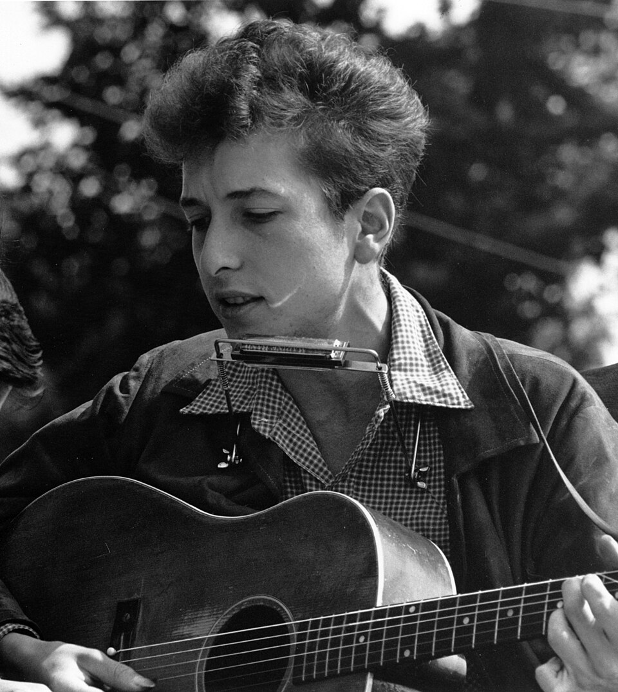

Blowin' in the Wind is the Bob Dylan song that turned a folk singer into a voice for his generation.
Dylan wrote it in 1962 and put it on his second album, The Freewheelin' Bob Dylan, in May 1963.
Peter, Paul and Mary took their cover to No. 2 on the Billboard Hot 100 that summer.

Table of Contents
The Story Behind Blowin' in the Wind
Two Verses at Gerde's Folk City
Dylan first played the song in public at Gerde's Folk City in Greenwich Village on April 16, 1962.
That night it had only two verses.
One account says he wrote the first draft, built from the first and third verses, in about ten minutes.
He added the middle verse shortly afterward.
An Old Spiritual Underneath
The melody is adapted from the spiritual "No More Auction Block."
Pete Seeger pointed out the connection.
Dylan set plain questions about peace, war and freedom to that old tune.
The refrain never answers them.
In Print Before on Record
Gil Turner, who hosted the weekly hoot nights at Gerde's, heard the song and helped get it into print.
Broadside magazine ran the lyrics in its sixth issue in May 1962.
Sing Out! followed in June 1962.
Dylan told that magazine, "There ain't too much I can say about this song except that the answer is blowing in the wind."
He also said in 1962 that he did not write protest songs, only things "to be said, for somebody, by somebody."
Recording and Release
Dylan recorded the song on July 9, 1962, at Columbia Recording Studios in New York City.
John Hammond produced the session.
The track appeared on The Freewheelin' Bob Dylan in May 1963.
Columbia issued it as a single in August 1963, with "Don't Think Twice, It's All Right" on the B-side.
The single did not chart in the United States.
It did reach No. 3 on the airplay chart in France.
Two years later he would plug in and write Like a Rolling Stone.
The Peter, Paul and Mary Hit
Dylan's manager, Albert Grossman, also managed Peter, Paul and Mary, and he played them Dylan's record.
The trio released their version on June 18, 1963, on Warner Bros.
It sold 300,000 copies in its first week and passed one million.
On July 13, 1963, it reached No. 2 on the Billboard Hot 100, and it spent five weeks at the top of the Middle-Road chart.
Peter Yarrow said it was the only song they ever recorded as a single.
Mary Travers said, "You don't need a translator for 'Blowing in the Wind.'"
The trio sang the song at the March on Washington, where Martin Luther King Jr. gave his "I Have a Dream" speech.
The 1963 music year guide shows where the hit sits among the other songs of that summer.
| Version or body | Detail | Result |
|---|---|---|
| Bob Dylan | Columbia single, August 1963 | Did not chart in the US; No. 3 in France (airplay) |
| Peter, Paul and Mary | Warner Bros., June 1963 | No. 2, Billboard Hot 100 |
| Stevie Wonder | 1966 cover | Top 10 Hot 100; No. 1 R&B |
| Grammy Hall of Fame | Dylan recording | Inducted 1994 |
| Grammy Hall of Fame | Peter, Paul and Mary recording | Inducted 2003 |
| Rolling Stone | 500 Greatest Songs (2004) | No. 14 |
Legacy
The Wyatt Rumor
In November 1963, Newsweek printed a claim that a New Jersey high school student named Lorre Wyatt had written the song.
The article included Wyatt's denial, and the claim was false.
Dylan is the credited writer.
Sam Cooke and Beyond
Sam Cooke put the song in his repertoire soon after it came out.
It also inspired him to write "A Change Is Gonna Come."
Stevie Wonder took it into the top 10 in 1966, and it went to No. 1 on the R&B chart.
The song sits at the heart of the Folk Rock genre hub.
Read the whole story in our Bob Dylan biography.
FAQ
Who wrote Blowin' in the Wind?
Bob Dylan wrote the song in 1962.
John Hammond produced his recording for Columbia Records.
When did Bob Dylan first perform the song?
Dylan first played it in public at Gerde's Folk City in Greenwich Village on April 16, 1962.
That version had only two verses, and he added the middle verse soon after.
Did Dylan's version chart?
Dylan's own single did not chart in the United States.
Peter, Paul and Mary's cover reached No. 2 on the Billboard Hot 100 in July 1963.
What is the melody based on?
The tune is adapted from the spiritual "No More Auction Block."
Pete Seeger identified the connection.
Did a high school student write it?
No, a Newsweek article in November 1963 claimed a New Jersey student named Lorre Wyatt wrote it.
The claim was false, and Dylan is the credited writer.
Two verses at a Village club grew into one of the best-known songs of the decade.
Wikipedia's entry on the song covers its history and covers in more depth.
Hear the track above and decide why Blowin' in the Wind still asks questions we cannot shake.